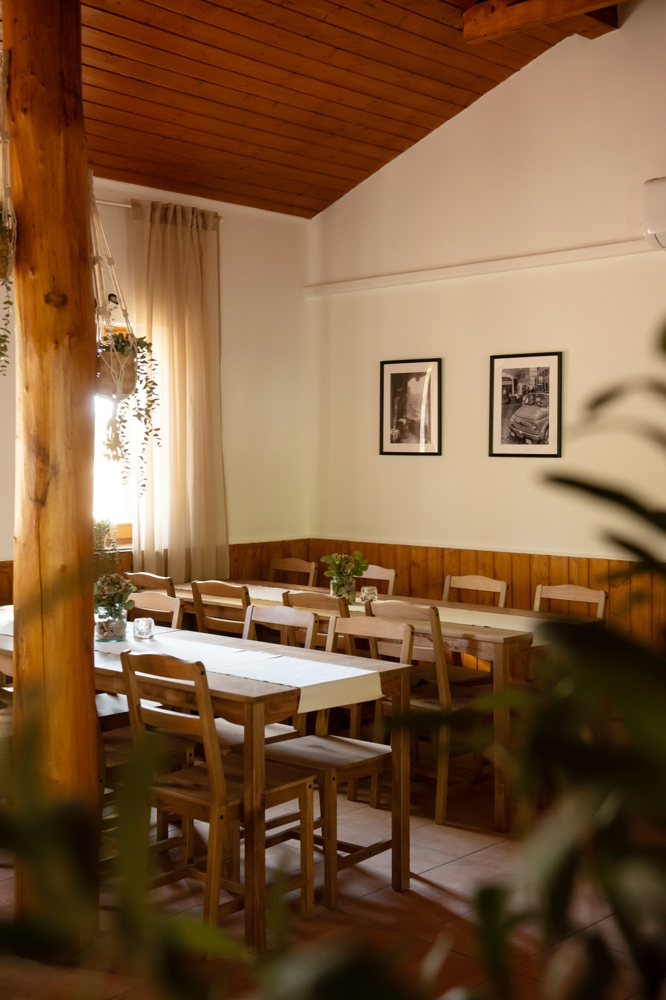
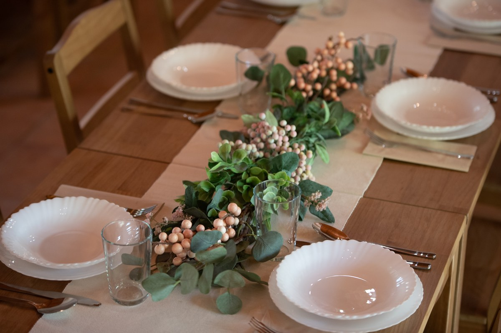
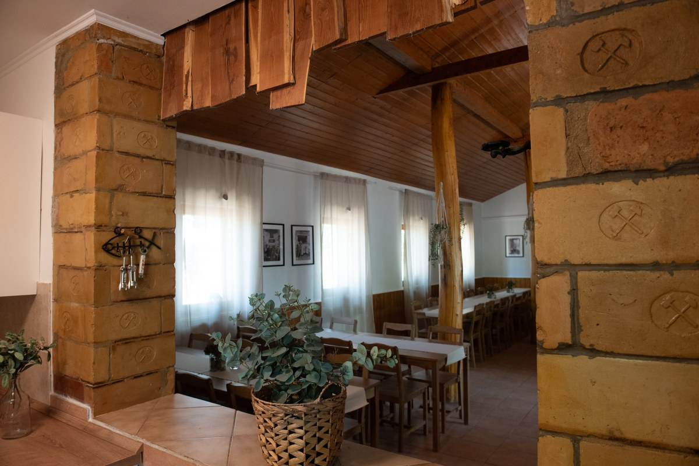
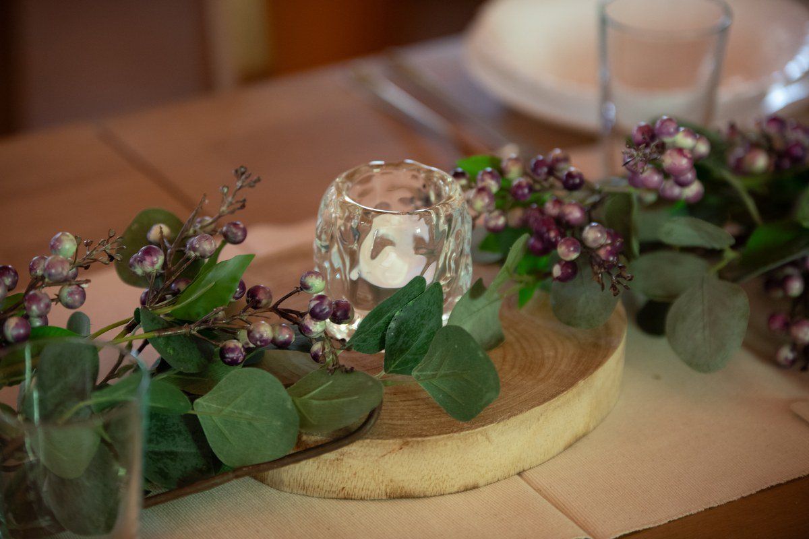
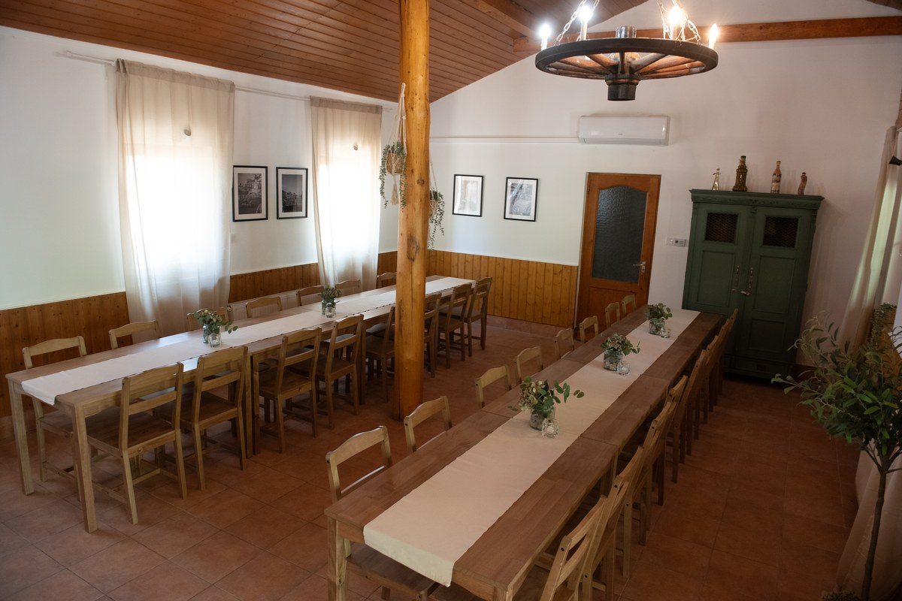
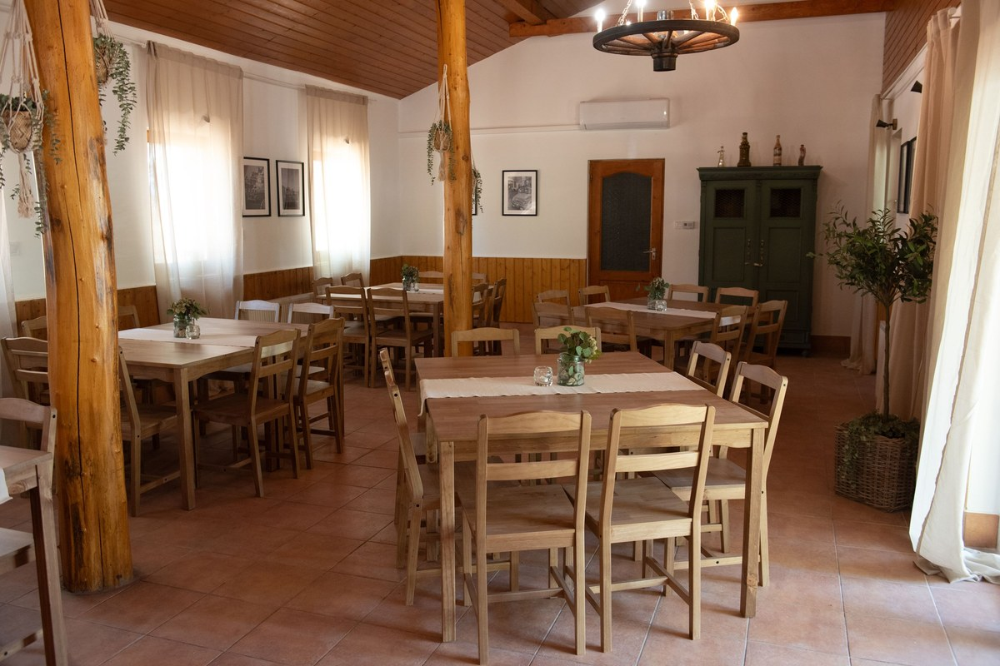
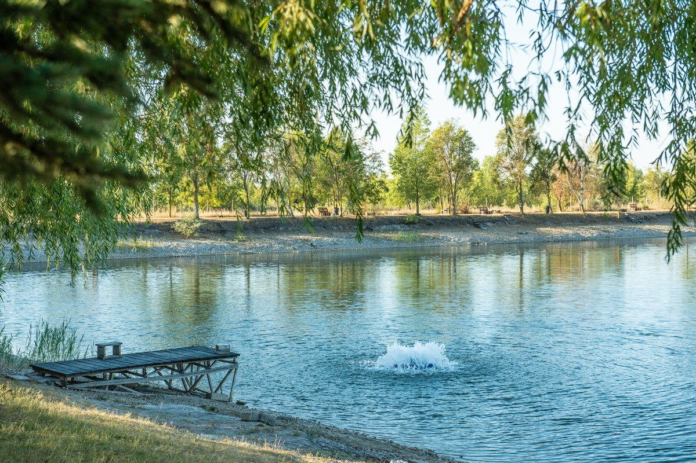

Rendezvények
Minden alkalomnak megvan a maga története
A Parton terét úgy alakítottuk ki, hogy ne nektek kelljen alkalmazkodnotok a helyhez. Inkább a hely alkalmazkodjon hozzátok.


Születésnapok
Ünnepeld úgy, ahogy igazán szereted.
Egy hosszú, közös vacsora, zene és tánc, tortázás, beszélgetés a teremben, majd egy kis levegőzés a tóparton. Nálunk nincs kötött forgatókönyv – a nap olyan lehet, amilyennek megálmodtad.


Családi ünnepek
Keresztelő, évforduló, ballagás, eljegyzés vagy egyszerűen egy alkalom, amikor összegyűlik a család. A Parton meghitt környezetet ad azokhoz az eseményekhez, amelyek igazán rólunk szólnak.


Esküvők
Kicsiben, meghitten, a vízparton.
Ha nem több száz fős lagzit képzeltetek el, hanem egy személyesebb esküvőt a hozzátok legközelebb állókkal, a Parton különleges helyszín lehet hozzá.
A terem és a tópart együtt ad lehetőséget a vacsorára, ünneplésre, fotózásra és a szabadtéri pillanatokra.


Céges rendezvények
Egy nap az irodán kívül.
Csapatépítő, tréning, évzáró, kisebb céges összejövetel vagy közös vacsora – nyugodt, természetközeli környezetben, ahol a beltéri programokat könnyen össze lehet kapcsolni a szabadtéri lehetőségekkel.

Workshopok & programok
Saját workshopot, tanfolyamot vagy közösségi programot szervezel, és hangulatos, természetközeli helyszínt keresel hozzá?
A Parton terme külső szervezők számára is bérelhető, így a saját elképzeléseddel, programoddal és vendégeiddel érkezhetsz hozzánk. A terem rugalmasan berendezhető, a felszerelt konyha és a közvetlen tópart pedig még több lehetőséget ad a program kialakításához.
Legyen szó kreatív workshopról, gasztronómiai programról, jóga- vagy életmódnapról, előadásról vagy kisebb közösségi programról – mi adjuk a helyet, te megtöltöd tartalommal.

Kültéri rendezvények
Több tér, több vendég, igazi tóparti hangulat.
Ha nagyobb társasággal ünnepelnétek, a Parton nem ér véget a rendezvényterem falainál. A tóparti szabadtéri területünkön sörpados elrendezéssel akár 100 fő fogadására is lehetőség van.
A természet közelsége, a vízpart és a tágas kültéri tér különleges hangulatot ad családi és baráti eseményeknek, céges rendezvényeknek, közösségi programoknak vagy akár egy kötetlenebb esküvőnek is.
A kültéri elrendezést és a lehetőségeket minden esetben a rendezvény jellegéhez és a várható létszámhoz igazítva egyeztetjük.

Te hozod az alkalmat.
Mi adjuk hozzá a helyet. Írd meg, mikor és milyen alkalomra érkeznél, és összeállítjuk az ajánlatot.
Ajánlatkérés